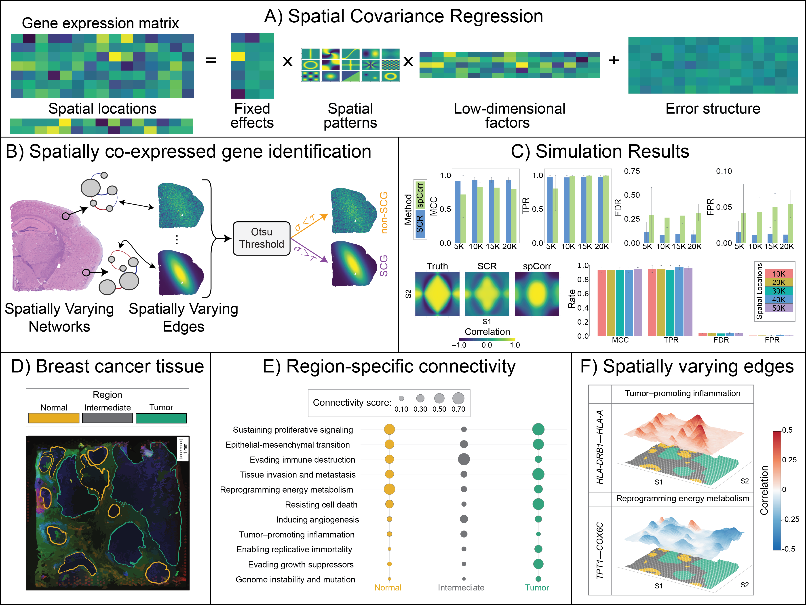

SCG: Spatially Co-expressed Gene Identification
High-resolution, spatially varying gene co-expression networks for spatial transcriptomics
Overview
SCG identifies gene pairs whose co-expression relationship changes meaningfully across a tissue section — what we call Spatially Co-expressed Genes (SCGs). Rather than estimating a single network shared across all locations, SCG estimates spot-specific co-expression networks that vary continuously across the tissue, without requiring pre-defined regions or clusters.
SCG is built on the Spatial Covariance Regression (SCR) framework: a spatially varying Bayesian factor model with GPU-accelerated coordinate-ascent variational inference that scales to modern platforms such as 10x Genomics Xenium (>50,000 spots).

Key Features
- Estimates spot-level co-expression networks
- Scales to Visium, Xenium, and other high-resolution ST platforms
- Rigorous uncertainty quantification via variational posterior
- Data-driven SCG identification with FDR control at 10%
- Hardware-agnostic: runs on CPU or GPU
Performance
SCG demonstrates strong and consistent recovery of spatially varying network structure across all spatial resolutions tested (5K–50K spots). Mean MCC ranged from 0.92 to 0.94, with TPR between 0.96 and 0.99 and FPR below 0.02 throughout, indicating reliable discrimination despite the class imbalance inherent to sparse networks. Against spCorr, SCG exceeded MCC by 0.10 to 0.20 at every matched sample size, ran five to seven times faster per edge, and scaled to resolutions where spCorr failed entirely.
| Metric | SCG | spCorr |
|---|---|---|
| MCC | 0.92–0.94 | 0.72–0.83 |
| TPR | 0.97–0.98 | 0.81–1.00 |
| FPR | 0.01–0.02 | 0.04–0.06 |
| Max spots | 50K+ | ~20K |
Applications
SCG has been applied to:
- Breast cancer (10x Visium, ~4,700 spots): recovers pathway-level network rewiring across tumor, intermediate, and normal tissue regions
- Alzheimer’s disease (10x Xenium, ~57,000 spots): replicates and extends the plaque-induced gene (PIG) co-expression module across anatomical regions
Installation
Requires Python \(\geq\) 3.9. GPU support via CUDA is optional but recommended for datasets >20K spots.
pip install git+https://github.com/iebuker/SCG.gitCitation
Manuscript in preparation.